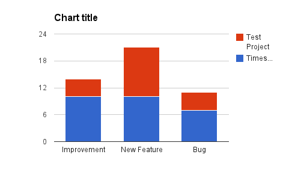
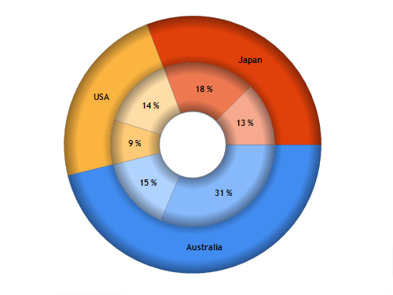

For the long time Timesheet plugin evolves basing on your feedback and feature requests, and I also have some features in mind.
Please vote for or comment on any or many enhancements below at corresponding bitbucket issue, if you'd like it to be implemented.
More/Better worked time charts Issue #429)
In Issue #416 pie chart is introduced for Worked Time, and it is used in case of 'Group By' also, but it's inconsistent with timesheet gadget, which groups values by project and then by selected field.
Stacked column chart would be more correct, e.g.

Or even better two level Doughnut Pie chart, e.g:

Please vote on Issue #429,
if you'd like this feature to be implemented, and comment if as Stacked Bar or Doughnut Pie chart, or as anything else.
The usability of the gadget would be enhanced if it was possible to sort the rows by clicking on the column header. Bonus would be if the gadget remembered sort order between separate logins.
Please vote on Issue #426, if you'd like this feature to be implemented.
User Level Holiday Calendar (Issue #407)
It would be a great new feature to allow the group timesheet to display holidays/sickness/non-work days (potentially even part time hours) on a per user basis.
This would allow at a glance view resource capacity for a team.
Please vote on Issue #407,
if you'd like this feature to be implemented.